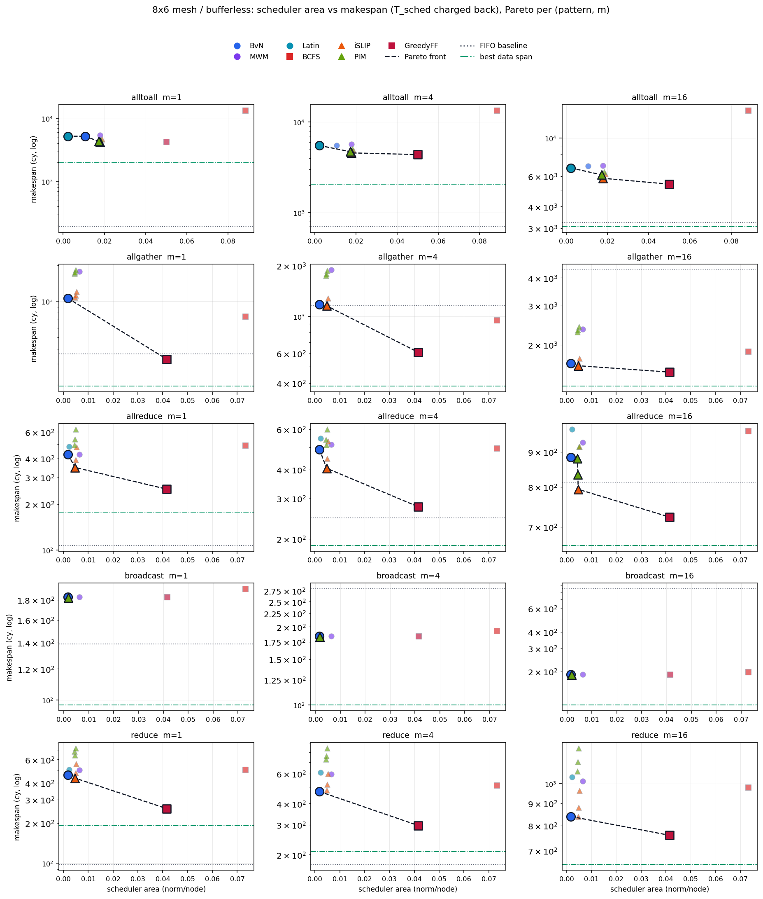
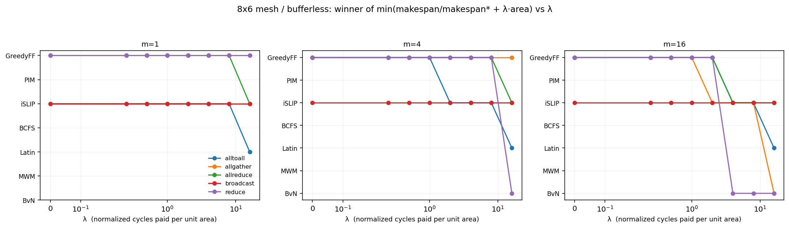

生成于 2026-08-11T03:59:57.169352+00:00 · 258 行配置 ·
数据 results/rg_noc_8x6.json
H=7 / V=9 RAMP=2 · RAMP_BW=2 mesh σ=1 · torus σ=2 对分带宽 = 6 flit/cy 控制时延 = ⌊曼哈顿/2⌋
CA 集中式 @ (x=4,y=0) = nid 4（原点左上、先 x 后 y，即第 1 行第 5 列）；
DA 目的端分布式；CA-batch = CA + 错峰 request + 时间窗批量仲裁 + 全局无冲突排程 BCFS（见 §3）。
§4 在同一控制平面口径下横向比较 7 个类 iSLIP / BvN 排程算法（一 request = 一 VOQ，
alltoall 每源 N−1=47 条、全网 2256 条），并把调度器面积与仲裁关键路径一起计价。即便 request/grant 完全不占用数据链路，CA 下 alltoall 若对每条 (s,d) 流单独 request，共 48×47=2256 条控制消息仍须挤入仲裁器控制路由器的 ≤4 个入端口。 入端口收敛下界 ⌈2256/4⌉=564 cy；私有控制 NoC DES 实测 t_last_request=1887 cy （超出部分 = 控制消息在私有网上的路径争用，不是数据干扰）。而 m=1 数据面下界仅 ~98 cy、FIFO 基线 makespan=192 cy。
两个有效缓解：
中心调度器固定在 (x=4, y=0)（原点左上、先 x 后 y，即第 1 行第 5 列，nid=4）。
控制消息在私有控制 NoC 上走 XY 维序路由；
单向时延取含 link delay 的曼哈顿距离的一半
ℓ_ctrl = ⌊(hx·H + hy·V) / 2⌋（数据面仍用满 H=7 / V=9）。
CA(4,0)→最远角：数据曼哈顿 mesh 73 / torus 55；控制面各取其半 → mesh 36 cy / torus 27 cy。
单条被授权的点对点流是一个刚性时空印记（wormhole、无缓冲）：给定起始 t0、XY 路径 P、m 个 flit， 它在有向链路 e 上的占用区间为
其中 prefP(e) 是源到 e 尾端的累计线延迟，σ 为每 flit 拍数（mesh 1 / torus 2）。 「全局无冲突」= 为一批 request 选一组 t0，使任意链路上任意两个印记不重叠，且源/目的 ramp 容量（RAMP_BW=2 flit/cy）不被超出。 这是固定路由的 job-shop 型区间装箱问题（一般情形 NP-hard），BCFS 用三件事求解：
输出按构造即无冲突，并由独立检查器 verify_conflict_free() 重新逐链路两两复核
（本次全部 79 组配置 conflict_free=✓，bufferless DES 实测 max_residency=0）。
这正是零缓冲数据面能成立的前提：路由器不需要任何 buffer，因为 grant 已经保证了逐拍不撞。
跨窗口的预约持久保留：第 k+1 批在排程时会看到第 k 批已占用的区间，因此全局（而非仅批内）无冲突。
| topo | plane | FIFO 基线 | DES makespan | vs 基线 | BCFS 排程 | FCFS 排程 | BCFS 增益 | 到达离散度 | R_rg | #窗口 | 无冲突 |
|---|---|---|---|---|---|---|---|---|---|---|---|
| mesh | bufferless | 192 | 270 | 1.41× | 270 | 291 | 7.8% | 83 | 175 | 2 | ✓ |
| mesh | bufferable | 192 | 298 | 1.55× | 270 | 291 | 7.8% | 83 | 175 | 2 | ✓ |
| torus | bufferless | 206 | 280 | 1.36× | 280 | 318 | 13.6% | 69 | 163 | 2 | ✓ |
| torus | bufferable | 206 | 807 | 3.92× | 280 | 318 | 13.6% | 69 | 163 | 2 | ✓ |
| topo | plane | FIFO 基线 | DES makespan | vs 基线 | BCFS 排程 | FCFS 排程 | BCFS 增益 | 到达离散度 | R_rg | #窗口 | 无冲突 |
|---|---|---|---|---|---|---|---|---|---|---|---|
| mesh | bufferless | 701 | 564 | 0.80× | 566 | 609 | 7.6% | 83 | 175 | 2 | ✓ |
| mesh | bufferable | 701 | 612 | 0.87× | 566 | 609 | 7.6% | 83 | 175 | 2 | ✓ |
| torus | bufferless | 1274 | 736 | 0.58× | 741 | 798 | 7.7% | 69 | 163 | 2 | ✓ |
| torus | bufferable | 1274 | 1162 | 0.91× | 741 | 798 | 7.7% | 69 | 163 | 2 | ✓ |
| topo | plane | FIFO 基线 | DES makespan | vs 基线 | BCFS 排程 | FCFS 排程 | BCFS 增益 | 到达离散度 | R_rg | #窗口 | 无冲突 |
|---|---|---|---|---|---|---|---|---|---|---|---|
| mesh | bufferless | 3238 | 1935 | 0.60× | 1943 | 2053 | 5.7% | 83 | 175 | 2 | ✓ |
| mesh | bufferable | 3238 | 1973 | 0.61× | 1943 | 2053 | 5.7% | 83 | 175 | 2 | ✓ |
| torus | bufferless | 5649 | 2781 | 0.49× | 2804 | 2886 | 2.9% | 69 | 163 | 2 | ✓ |
| torus | bufferable | 5649 | 2828 | 0.50× | 2804 | 2886 | 2.9% | 69 | 163 | 2 | ✓ |
| topo | plane | FIFO 基线 | DES makespan | vs 基线 | BCFS 排程 | FCFS 排程 | BCFS 增益 | 到达离散度 | R_rg | #窗口 | 无冲突 |
|---|---|---|---|---|---|---|---|---|---|---|---|
| mesh | bufferless | 362 | 270 | 0.75× | 270 | 270 | 0.0% | 83 | 175 | 2 | ✓ |
| mesh | bufferable | 362 | 343 | 0.95× | 270 | 270 | 0.0% | 83 | 175 | 2 | ✓ |
| torus | bufferless | 755 | 244 | 0.32× | 244 | 252 | 3.3% | 69 | 163 | 2 | ✓ |
| torus | bufferable | 755 | 624 | 0.83× | 244 | 252 | 3.3% | 69 | 163 | 2 | ✓ |
| topo | plane | FIFO 基线 | DES makespan | vs 基线 | BCFS 排程 | FCFS 排程 | BCFS 增益 | 到达离散度 | R_rg | #窗口 | 无冲突 |
|---|---|---|---|---|---|---|---|---|---|---|---|
| mesh | bufferless | 1157 | 480 | 0.41× | 482 | 512 | 6.2% | 83 | 175 | 2 | ✓ |
| mesh | bufferable | 1157 | 881 | 0.76× | 482 | 512 | 6.2% | 83 | 175 | 2 | ✓ |
| torus | bufferless | 2567 | 717 | 0.28× | 722 | 740 | 2.5% | 69 | 163 | 2 | ✓ |
| torus | bufferable | 2567 | 1908 | 0.74× | 722 | 740 | 2.5% | 69 | 163 | 2 | ✓ |
| topo | plane | FIFO 基线 | DES makespan | vs 基线 | BCFS 排程 | FCFS 排程 | BCFS 增益 | 到达离散度 | R_rg | #窗口 | 无冲突 |
|---|---|---|---|---|---|---|---|---|---|---|---|
| mesh | bufferless | 4337 | 1409 | 0.32× | 1417 | 1456 | 2.8% | 83 | 175 | 2 | ✓ |
| mesh | bufferable | 4337 | 2830 | 0.65× | 1417 | 1456 | 2.8% | 83 | 175 | 2 | ✓ |
| torus | bufferless | 9815 | 1379 | 0.14× | 1402 | 1628 | 16.1% | 69 | 163 | 2 | ✓ |
| torus | bufferable | 9815 | 6643 | 0.68× | 1402 | 1628 | 16.1% | 69 | 163 | 2 | ✓ |
| topo | plane | FIFO 基线 | DES makespan | vs 基线 | BCFS 排程 | FCFS 排程 | BCFS 增益 | 到达离散度 | R_rg | #窗口 | 无冲突 |
|---|---|---|---|---|---|---|---|---|---|---|---|
| mesh | bufferless | 107 | 249 | 2.33× | 249 | 249 | 0.0% | 83 | 175 | 2 | ✓ |
| mesh | bufferable | 107 | 249 | 2.33× | 249 | 249 | 0.0% | 83 | 175 | 2 | ✓ |
| torus | bufferless | 98 | 220 | 2.24× | 220 | 220 | 0.0% | 69 | 163 | 2 | ✓ |
| torus | bufferable | 98 | 220 | 2.24× | 220 | 220 | 0.0% | 69 | 163 | 2 | ✓ |
| topo | plane | FIFO 基线 | DES makespan | vs 基线 | BCFS 排程 | FCFS 排程 | BCFS 增益 | 到达离散度 | R_rg | #窗口 | 无冲突 |
|---|---|---|---|---|---|---|---|---|---|---|---|
| mesh | bufferless | 247 | 256 | 1.04× | 258 | 258 | 0.0% | 83 | 175 | 2 | ✓ |
| mesh | bufferable | 247 | 258 | 1.04× | 258 | 258 | 0.0% | 83 | 175 | 2 | ✓ |
| torus | bufferless | 380 | 276 | 0.73× | 281 | 281 | 0.0% | 69 | 163 | 2 | ✓ |
| torus | bufferable | 380 | 281 | 0.74× | 281 | 281 | 0.0% | 69 | 163 | 2 | ✓ |
| topo | plane | FIFO 基线 | DES makespan | vs 基线 | BCFS 排程 | FCFS 排程 | BCFS 增益 | 到达离散度 | R_rg | #窗口 | 无冲突 |
|---|---|---|---|---|---|---|---|---|---|---|---|
| mesh | bufferless | 811 | 726 | 0.90× | 734 | 734 | 0.0% | 83 | 175 | 2 | ✓ |
| mesh | bufferable | 811 | 734 | 0.91× | 734 | 734 | 0.0% | 83 | 175 | 2 | ✓ |
| torus | bufferless | 1508 | 830 | 0.55× | 853 | 853 | 0.0% | 69 | 163 | 2 | ✓ |
| torus | bufferable | 1508 | 853 | 0.57× | 853 | 853 | 0.0% | 69 | 163 | 2 | ✓ |
| topo | plane | FIFO 基线 | DES makespan | vs 基线 | BCFS 排程 | FCFS 排程 | BCFS 增益 | 到达离散度 | R_rg | #窗口 | 无冲突 |
|---|---|---|---|---|---|---|---|---|---|---|---|
| mesh | bufferless | 139 | 182 | 1.31× | 182 | 182 | 0.0% | 0 | 37 | 1 | ✓ |
| mesh | bufferable | 139 | 182 | 1.31× | 182 | 182 | 0.0% | 0 | 37 | 1 | ✓ |
| torus | bufferless | 102 | 143 | 1.40× | 143 | 143 | 0.0% | 0 | 37 | 1 | ✓ |
| torus | bufferable | 102 | 143 | 1.40× | 143 | 143 | 0.0% | 0 | 37 | 1 | ✓ |
| topo | plane | FIFO 基线 | DES makespan | vs 基线 | BCFS 排程 | FCFS 排程 | BCFS 增益 | 到达离散度 | R_rg | #窗口 | 无冲突 |
|---|---|---|---|---|---|---|---|---|---|---|---|
| mesh | bufferless | 280 | 183 | 0.65× | 185 | 185 | 0.0% | 0 | 37 | 1 | ✓ |
| mesh | bufferable | 280 | 185 | 0.66× | 185 | 185 | 0.0% | 0 | 37 | 1 | ✓ |
| torus | bufferless | 367 | 144 | 0.39× | 149 | 149 | 0.0% | 0 | 37 | 1 | ✓ |
| torus | bufferable | 367 | 149 | 0.41× | 149 | 149 | 0.0% | 0 | 37 | 1 | ✓ |
| topo | plane | FIFO 基线 | DES makespan | vs 基线 | BCFS 排程 | FCFS 排程 | BCFS 增益 | 到达离散度 | R_rg | #窗口 | 无冲突 |
|---|---|---|---|---|---|---|---|---|---|---|---|
| mesh | bufferless | 844 | 189 | 0.22× | 197 | 197 | 0.0% | 0 | 37 | 1 | ✓ |
| mesh | bufferable | 844 | 197 | 0.23× | 197 | 197 | 0.0% | 0 | 37 | 1 | ✓ |
| torus | bufferless | 1495 | 150 | 0.10× | 173 | 173 | 0.0% | 0 | 37 | 1 | ✓ |
| torus | bufferable | 1495 | 173 | 0.12× | 173 | 173 | 0.0% | 0 | 37 | 1 | ✓ |
| topo | plane | FIFO 基线 | DES makespan | vs 基线 | BCFS 排程 | FCFS 排程 | BCFS 增益 | 到达离散度 | R_rg | #窗口 | 无冲突 |
|---|---|---|---|---|---|---|---|---|---|---|---|
| mesh | bufferless | 98 | 269 | 2.74× | 269 | 269 | 0.0% | 76 | 173 | 2 | ✓ |
| mesh | bufferable | 98 | 269 | 2.74× | 269 | 269 | 0.0% | 76 | 173 | 2 | ✓ |
| torus | bufferless | 65 | 208 | 3.20× | 208 | 208 | 0.0% | 74 | 167 | 2 | ✓ |
| torus | bufferable | 65 | 208 | 3.20× | 208 | 208 | 0.0% | 74 | 167 | 2 | ✓ |
| topo | plane | FIFO 基线 | DES makespan | vs 基线 | BCFS 排程 | FCFS 排程 | BCFS 增益 | 到达离散度 | R_rg | #窗口 | 无冲突 |
|---|---|---|---|---|---|---|---|---|---|---|---|
| mesh | bufferless | 175 | 277 | 1.58× | 279 | 279 | 0.0% | 76 | 173 | 2 | ✓ |
| mesh | bufferable | 175 | 279 | 1.59× | 279 | 279 | 0.0% | 76 | 173 | 2 | ✓ |
| torus | bufferless | 203 | 301 | 1.48× | 306 | 306 | 0.0% | 74 | 167 | 2 | ✓ |
| torus | bufferable | 203 | 306 | 1.51× | 306 | 306 | 0.0% | 74 | 167 | 2 | ✓ |
| topo | plane | FIFO 基线 | DES makespan | vs 基线 | BCFS 排程 | FCFS 排程 | BCFS 增益 | 到达离散度 | R_rg | #窗口 | 无冲突 |
|---|---|---|---|---|---|---|---|---|---|---|---|
| mesh | bufferless | 652 | 746 | 1.14× | 754 | 754 | 0.0% | 76 | 173 | 2 | ✓ |
| mesh | bufferable | 652 | 754 | 1.16× | 754 | 754 | 0.0% | 76 | 173 | 2 | ✓ |
| torus | bufferless | 779 | 858 | 1.10× | 881 | 882 | 0.1% | 74 | 167 | 2 | ✓ |
| torus | bufferable | 779 | 881 | 1.13× | 881 | 882 | 0.1% | 74 | 167 | 2 | ✓ |
读法：「BCFS 增益」= FCFS 排程 makespan / BCFS 排程 makespan − 1，即关键度排序 + backfill 相对纯到达序贪心的收益。 alltoall 上 mesh 约 5%、torus 约 15%（torus σ=2 使印记更长、装箱更紧张，全局视野更值钱）。 reduce / broadcast / allreduce 增益为 0：这些 pattern 的瓶颈是根节点 eject 端口或树直径， 是容量下界而非装箱质量决定 makespan，任何顺序都打到同一个下界——这本身是个有用的结论： 全局排程只在「多对多、链路争用型」流量上有价值。
W 小 = 频繁小批，R_rg 短但全局视野窄；W 大 = 批量大、BCFS 增益高但等窗代价上升。W=∞ 表示等所有 request 到齐（同步纪律）。
| topo | W | #窗口 | DES makespan | FCFS makespan | BCFS 增益 | R_rg | 数据面跨度 |
|---|---|---|---|---|---|---|---|
| mesh | 16 | 6 | 544 | 578 | 5.9% | 137 | 515 |
| torus | 16 | 6 | 745 | 784 | 4.5% | 124 | 722 |
| mesh | 64 | 2 | 564 | 609 | 7.6% | 175 | 494 |
| torus | 64 | 2 | 736 | 798 | 7.7% | 163 | 669 |
| mesh | 256 | 1 | 722 | 795 | 9.8% | 317 | 460 |
| torus | 256 | 1 | 862 | 992 | 14.4% | 310 | 603 |
| mesh | ∞ (等齐) | 1 | 561 | 634 | 12.6% | 156 | 460 |
| torus | ∞ (等齐) | 1 | 687 | 817 | 18.1% | 135 | 603 |
uniform_jitter=每节点 U[0,J) 随机起跳；distance_skew=离 CA 远的节点提前发（补偿线延迟）；burst=半数节点同时、半数延后 J。
| 产生模型 | J | 到达离散度 | R_rg | DES makespan | BCFS 增益 |
|---|---|---|---|---|---|
| uniform_jitter | 0 | 49 | 131 | 528 | 17.2% |
| uniform_jitter | 64 | 83 | 175 | 564 | 7.6% |
| uniform_jitter | 256 | 256 | 361 | 659 | 10.4% |
| distance_skew | 0 | 39 | 169 | 594 | 8.1% |
| distance_skew | 64 | 39 | 169 | 594 | 8.1% |
| distance_skew | 256 | 39 | 169 | 594 | 8.1% |
| burst | 0 | 49 | 131 | 528 | 17.2% |
| burst | 64 | 98 | 180 | 541 | 8.8% |
| burst | 256 | 290 | 372 | 620 | 4.0% |
| pattern | #request | 到达离散度 | R_rg | DES makespan | 数据面跨度 |
|---|---|---|---|---|---|
| alltoall | 2256 | 1890 | 2010 | 2147 | 2077 |
| reduce | 47 | 76 | 173 | 277 | 207 |
W 的取舍：W→0 退化成逐条即时仲裁（R_rg 最短，但 BCFS 只能看到一两条流，增益≈0）； W→∞ 退化成同步 barrier（视野最全、增益最高，但要付「等最晚 request」的税）。 中间存在最优点：mesh alltoall 聚合 m=4 在 W≈16–64 取到最小 makespan。
产生时刻错峰的影响：J=0（所有节点同时产生）时到达离散度仅来自控制半曼哈顿差（mesh 上 ⌊73/2⌋−⌊7/2⌋ ≈ 36−3 = 33 cy 量级）；
J 增大时离散度线性增长，R_rg 随之上升，但 BCFS 增益下降——因为 release 时刻本身已经把流拉开了，
排程器可优化的重叠变少。distance_skew（远节点提前发）能显著压缩到达离散度，是低成本的工程手段。
数据 results/mesh_sched_pareto.json · 660 行 ·
生成于 2026-08-12 10:02:58
Request 口径（硬约束）：一条 request = 一条 VOQ。单播 alltoall 下每个源节点持有 N−1=47 条 VOQ[s→d]，全网 N·(N−1)=2256 条控制消息（实测 n_request_units=2256，aggregate=False）。调度与授权均以 VOQ 为粒度；不做「每源聚合一条」。
交叉开关的 IQ 模型里，输入端口 i 对每个输出 j 有一条
VOQ[i][j]；iSLIP / BvN 分配的是这些 VOQ 对交叉开关端口的占用
（资源是二部匹配，单位是置换矩阵）。2D mesh 上对应物是：节点 s
对每个目的 d≠s 有一条 VOQ[s→d]（共 N−1 条），但一条 VOQ
吃掉整条 XY 路径而不是一个输出端口。因此分配单位换成
做了这个替换，经典算法一一对应搬得过来：
| 交叉开关 | 2D mesh 对应物 | 本报告的量化 |
|---|---|---|
| VOQ[i][j] 举手 request | VOQ[s→d] 举手 request | alltoall：每源 N−1 条、全网 N·(N−1)=2256 条 ✓ |
| 置换矩阵（一个时隙配置） | 一个 LDPS（一轮） | 轮内链路不相交 → 按构造无冲突，独立复核 ✓ |
| BvN 分解为最少置换数 | 把 VOQ 集划分为最少 LDPS 轮次 | 下界 = max_e (#VOQs on e)（Birkhoff 置换数界类比）；实测轮次/下界
= 1.03×（latin）～1.49×（islip） |
| iSLIP：输出 grant + 输入 accept | 逐链路 RR grant + 全路径一致才 accept | 这是 mesh 新增的硬约束：交叉开关只要 1 个输出同意，mesh 要路径上全部链路同意 |
一条流有 h 条链路，每条链路有 k 个竞争者，逐链路独立 RR 授权下它拿到全部
授权的概率约 k−(h−1)。alltoall 下 h≈6、k≈80，概率实际为零：实测
islip_mesh 在 alltoall 上靠一致性通过的流只有
17.8%（broadcast/reduce 这类低竞争 pattern 可达 90%+）。
推论：纯链路局部的仲裁器在 mesh 上会活锁，任何 mesh 调度器都必须补一个「路径级顺序分配」步。 本族的 5 个相位型成员因此统一为「I 轮分布式一致性匹配 + 按优先级顺序补齐该轮 LDPS」， 成员之间的差别落在优先级规则（flow_id / pressure / ROM / RR 指针 / 随机）上。 这也正面回答了「为什么 mesh 需要集中调度器」——不是工程偷懒，是分布式匹配在路径资源上不收敛。
连带结果：迭代轮数 I 的边际收益为负。I 从 1 → 4 几乎不改变轮次数，
却把 T_sched 乘上 4（alltoall m=4：makespan 4576 → 4886），
所以 I=1 在所有 (pattern, m) 上都不劣。
相位型（bvn / mwm / latin / islip / pim）一轮共享一个起始时刻，只需一张
链路占用位图 + 每链路一个 free_at 寄存器，无冲突按构造成立；
代价是护航效应——一轮的时长由最慢成员决定，而在 7/9 拍长线下「最慢成员」由线延迟
（≈98 cy）而不是消息长度（m·σ）决定。表中「护航比」= Σ轮时长 ÷ 实际 span，
量化了 free_at 轮间流水相对硬 barrier 挽回了多少。
流水型（bcfs / greedy_ff）允许任意起始偏移、把刚性印记装进每链路区间表的空洞里， 没有护航效应，数据面 span 小一个数量级（alltoall m=4：2105 vs 3430 cy）；代价是面积（区间表 126,912 bit vs 5,314 bit，22×）与 相关仲裁步数（Θ(流数) vs Θ(轮次数)）。
只比数据面 span 会奖励「跑得快但造不出来」的算法，所以本节把仲裁关键路径折算成周期数
并加回 makespan：T_sched = 相关仲裁步数 × ⌈门级深度 / 12⌉。
「相关」= 不能重叠：相位型每轮一步（≈轮次数，几十步），流水型第 k 条流的最早可行位置依赖前 k−1 条
的落位（≈流数，几千步）。这一项决定了整张 Pareto 图的形状：
bcfs 的多起点（3 个固定序 + 2 个随机序，串行重跑）换来的 makespan 增益只有
~2%，却付 5×流数 = 11,280 cy 的调度延迟 → 在全部 15 个 (pattern, m) 上都被
greedy_ff 支配，从未进入 Pareto 前沿。mwm_mesh 用 N²·W_d 需求矩阵换来更少轮次（alltoall 101 vs bvn 114），
但每轮更长、面积更大 → 同样从未进入前沿。「最大权重」在交叉开关上的优势在
mesh 上被轮时长的线延迟主导抹掉。latin_mesh 只需一张只读 ROM（5,314 bit，面积
0.0023）却拿到与 bvn 相当的轮次数 → alltoall 上的最小面积端点。顺带证否一个直觉：交叉开关上最优的 Latin 方阵 / 固定 BvN 表在 mesh 上不是 N−1 轮就够——一个置换在 XY 路由下并不链路不相交，实测需 99 轮（下界 96）。这正是「拓扑空间」这一维带来的额外代价。

5 pattern × 3 m 面板；x = 归一化调度器面积（摊到每节点，标定
greedy_ff = 现有 ARB_AREA['ca'] = 0.05），y = makespan（含 T_sched，对数轴）；
黑虚线 = Pareto 前沿，灰点线 = FIFO 基线，绿点划线 = 该格最好的纯数据面 span。
每 pattern 的大图见 results/mesh_sched_pareto_<pattern>.png。
每格首行是分组交换 FIFO 基线（无 request–grant）。 「DES + T_sched」列显式拆开数据面仿真结果与调度器自身延迟，两者之和即 makespan。 🏅 = 该 (pattern, m) 的 Pareto 前沿成员。
48×47=2256 条单播流，对分带宽绑定。CA 非聚合是最坏控制税案例；ca_batch 用全局无冲突排程压缩数据面。
| 算法 | 类别 | 轮次 / 下界 | 护航比 Σ轮时长 ÷ 实际 span |
DES + T_sched | makespan | vs 基线 | 面积/节点 |
|---|---|---|---|---|---|---|---|
| FIFO 基线 无 request–grant | — | — | — | — | 192 | 1.00× | — |
| bvn_mesh LDPS 轮次划分 (first-fit) 🏅 | batch/slot | 114 / 96 = 1.19× | 2.58× | 5107 + 114 | 5221 | 27.19× | 0.0106 |
| mwm_mesh 最大权重轮次 (pressure) | batch/slot | 101 / 96 = 1.05× | 1.68× | 5224 + 202 | 5426 | 28.26× | 0.0178 |
| latin_mesh 代数 ROM 轮次 🏅 | batch/slot | 99 / 96 = 1.03× | 2.38× | 5134 + 99 | 5233 | 27.26× | 0.0023 |
| bcfs 区间装箱 + 多起点 | batch/pipelined | — | — | 2061 + 11280 | 13341 | 69.48× | 0.0883 |
| islip_mesh 逐链路 RR + 全路径 accept · I=1 🏅 | incremental/slot | 156 / 96 = 1.62× | 2.45× | 4082 + 156 | 4238 | 22.07× | 0.0178 |
| islip_mesh 逐链路 RR + 全路径 accept · I=2 🏅 | incremental/slot | 158 / 96 = 1.65× | 2.52× | 3964 + 316 | 4280 | 22.29× | 0.0182 |
| islip_mesh 逐链路 RR + 全路径 accept · I=4 🏅 | incremental/slot | 156 / 96 = 1.62× | 2.44× | 4022 + 624 | 4646 | 24.20× | 0.0189 |
| pim_mesh 随机选择 + 全路径 accept · I=1 🏅 | incremental/slot | 150 / 96 = 1.56× | 2.36× | 4196 + 150 | 4346 | 22.64× | 0.0172 |
| pim_mesh 随机选择 + 全路径 accept · I=2 🏅 | incremental/slot | 152 / 96 = 1.58× | 2.42× | 4164 + 304 | 4468 | 23.27× | 0.0176 |
| pim_mesh 随机选择 + 全路径 accept · I=4 🏅 | incremental/slot | 152 / 96 = 1.58× | 2.50× | 4079 + 608 | 4687 | 24.41× | 0.0183 |
| greedy_ff 到达序最早可行 | incremental/pipelined | — | — | 1997 + 2256 | 4253 | 22.15× | 0.0500 |
| 算法 | 类别 | 轮次 / 下界 | 护航比 Σ轮时长 ÷ 实际 span |
DES + T_sched | makespan | vs 基线 | 面积/节点 |
|---|---|---|---|---|---|---|---|
| FIFO 基线 无 request–grant | — | — | — | — | 701 | 1.00× | — |
| bvn_mesh LDPS 轮次划分 (first-fit) | batch/slot | 114 / 96 = 1.19× | 2.44× | 5427 + 114 | 5541 | 7.90× | 0.0106 |
| mwm_mesh 最大权重轮次 (pressure) | batch/slot | 101 / 96 = 1.05× | 1.62× | 5519 + 202 | 5721 | 8.16× | 0.0178 |
| latin_mesh 代数 ROM 轮次 🏅 | batch/slot | 99 / 96 = 1.03× | 2.26× | 5426 + 99 | 5525 | 7.88× | 0.0023 |
| bcfs 区间装箱 + 多起点 | batch/pipelined | — | — | 2135 + 11280 | 13415 | 19.14× | 0.0883 |
| islip_mesh 逐链路 RR + 全路径 accept · I=1 🏅 | incremental/slot | 143 / 96 = 1.49× | 2.26× | 4433 + 143 | 4576 | 6.53× | 0.0178 |
| islip_mesh 逐链路 RR + 全路径 accept · I=2 🏅 | incremental/slot | 142 / 96 = 1.48× | 2.25× | 4331 + 284 | 4615 | 6.58× | 0.0182 |
| islip_mesh 逐链路 RR + 全路径 accept · I=4 🏅 | incremental/slot | 144 / 96 = 1.50× | 2.28× | 4325 + 576 | 4901 | 6.99× | 0.0189 |
| pim_mesh 随机选择 + 全路径 accept · I=1 🏅 | incremental/slot | 143 / 96 = 1.49× | 2.24× | 4578 + 143 | 4721 | 6.73× | 0.0172 |
| pim_mesh 随机选择 + 全路径 accept · I=2 🏅 | incremental/slot | 141 / 96 = 1.47× | 2.21× | 4585 + 282 | 4867 | 6.94× | 0.0176 |
| pim_mesh 随机选择 + 全路径 accept · I=4 🏅 | incremental/slot | 143 / 96 = 1.49× | 2.27× | 4514 + 572 | 5086 | 7.26× | 0.0183 |
| greedy_ff 到达序最早可行 🏅 | incremental/pipelined | — | — | 2129 + 2256 | 4385 | 6.26× | 0.0500 |
| 算法 | 类别 | 轮次 / 下界 | 护航比 Σ轮时长 ÷ 实际 span |
DES + T_sched | makespan | vs 基线 | 面积/节点 |
|---|---|---|---|---|---|---|---|
| FIFO 基线 无 request–grant | — | — | — | — | 3238 | 1.00× | — |
| bvn_mesh LDPS 轮次划分 (first-fit) | batch/slot | 114 / 96 = 1.19× | 2.03× | 6771 + 114 | 6885 | 2.13× | 0.0106 |
| mwm_mesh 最大权重轮次 (pressure) | batch/slot | 101 / 96 = 1.05× | 1.47× | 6724 + 202 | 6926 | 2.14× | 0.0178 |
| latin_mesh 代数 ROM 轮次 🏅 | batch/slot | 99 / 96 = 1.03× | 1.94× | 6596 + 99 | 6695 | 2.07× | 0.0023 |
| bcfs 区间装箱 + 多起点 | batch/pipelined | — | — | 3122 + 11280 | 14402 | 4.45× | 0.0883 |
| islip_mesh 逐链路 RR + 全路径 accept · I=1 🏅 | incremental/slot | 133 / 96 = 1.39× | 1.93× | 5702 + 133 | 5835 | 1.80× | 0.0178 |
| islip_mesh 逐链路 RR + 全路径 accept · I=2 🏅 | incremental/slot | 131 / 96 = 1.36× | 1.94× | 5625 + 262 | 5887 | 1.82× | 0.0182 |
| islip_mesh 逐链路 RR + 全路径 accept · I=4 🏅 | incremental/slot | 128 / 96 = 1.33× | 1.89× | 5690 + 512 | 6202 | 1.92× | 0.0189 |
| pim_mesh 随机选择 + 全路径 accept · I=1 🏅 | incremental/slot | 131 / 96 = 1.36× | 1.88× | 5980 + 131 | 6111 | 1.89× | 0.0172 |
| pim_mesh 随机选择 + 全路径 accept · I=2 🏅 | incremental/slot | 127 / 96 = 1.32× | 1.82× | 5985 + 254 | 6239 | 1.93× | 0.0176 |
| pim_mesh 随机选择 + 全路径 accept · I=4 🏅 | incremental/slot | 126 / 96 = 1.31× | 1.85× | 5870 + 504 | 6374 | 1.97× | 0.0183 |
| greedy_ff 到达序最早可行 🏅 | incremental/pipelined | — | — | 3142 + 2256 | 5398 | 1.67× | 0.0500 |
大图：results/mesh_sched_pareto_alltoall.png
每源一棵多播树（48 棵）。sync=等齐 48 个 request 后统一 grant；async=每 grant 一棵树。
| 算法 | 类别 | 轮次 / 下界 | 护航比 Σ轮时长 ÷ 实际 span |
DES + T_sched | makespan | vs 基线 | 面积/节点 |
|---|---|---|---|---|---|---|---|
| FIFO 基线 无 request–grant | — | — | — | — | 362 | 1.00× | — |
| bvn_mesh LDPS 轮次划分 (first-fit) 🏅 | batch/slot | 40 / 40 = 1.00× | 3.48× | 1021 + 40 | 1061 | 2.93× | 0.0018 |
| mwm_mesh 最大权重轮次 (pressure) | batch/slot | 40 / 40 = 1.00× | 1.84× | 1694 + 80 | 1774 | 4.90× | 0.0065 |
| latin_mesh 代数 ROM 轮次 | batch/slot | 40 / 40 = 1.00× | 3.48× | 1021 + 40 | 1061 | 2.93× | 0.0023 |
| bcfs 区间装箱 + 多起点 | batch/pipelined | — | — | 270 + 480 | 750 | 2.07× | 0.0732 |
| islip_mesh 逐链路 RR + 全路径 accept · I=1 | incremental/slot | 41 / 40 = 1.02× | 3.02× | 1036 + 41 | 1077 | 2.98× | 0.0047 |
| islip_mesh 逐链路 RR + 全路径 accept · I=2 | incremental/slot | 41 / 40 = 1.02× | 3.02× | 1036 + 82 | 1118 | 3.09× | 0.0049 |
| islip_mesh 逐链路 RR + 全路径 accept · I=4 | incremental/slot | 41 / 40 = 1.02× | 3.02× | 1036 + 164 | 1200 | 3.31× | 0.0053 |
| pim_mesh 随机选择 + 全路径 accept · I=1 | incremental/slot | 42 / 40 = 1.05× | 1.92× | 1660 + 42 | 1702 | 4.70× | 0.0044 |
| pim_mesh 随机选择 + 全路径 accept · I=2 | incremental/slot | 42 / 40 = 1.05× | 1.92× | 1660 + 84 | 1744 | 4.82× | 0.0046 |
| pim_mesh 随机选择 + 全路径 accept · I=4 | incremental/slot | 42 / 40 = 1.05× | 1.92× | 1660 + 168 | 1828 | 5.05× | 0.0050 |
| greedy_ff 到达序最早可行 🏅 | incremental/pipelined | — | — | 232 + 96 | 328 | 0.91× | 0.0416 |
| 算法 | 类别 | 轮次 / 下界 | 护航比 Σ轮时长 ÷ 实际 span |
DES + T_sched | makespan | vs 基线 | 面积/节点 |
|---|---|---|---|---|---|---|---|
| FIFO 基线 无 request–grant | — | — | — | — | 1157 | 1.00× | — |
| bvn_mesh LDPS 轮次划分 (first-fit) 🏅 | batch/slot | 40 / 40 = 1.00× | 3.17× | 1139 + 40 | 1179 | 1.02× | 0.0018 |
| mwm_mesh 最大权重轮次 (pressure) | batch/slot | 40 / 40 = 1.00× | 1.79× | 1809 + 80 | 1889 | 1.63× | 0.0065 |
| latin_mesh 代数 ROM 轮次 | batch/slot | 40 / 40 = 1.00× | 3.17× | 1139 + 40 | 1179 | 1.02× | 0.0023 |
| bcfs 区间装箱 + 多起点 | batch/pipelined | — | — | 467 + 480 | 947 | 0.82× | 0.0732 |
| islip_mesh 逐链路 RR + 全路径 accept · I=1 🏅 | incremental/slot | 41 / 40 = 1.02× | 2.91× | 1115 + 41 | 1156 | 1.00× | 0.0047 |
| islip_mesh 逐链路 RR + 全路径 accept · I=2 🏅 | incremental/slot | 41 / 40 = 1.02× | 2.91× | 1115 + 82 | 1197 | 1.03× | 0.0049 |
| islip_mesh 逐链路 RR + 全路径 accept · I=4 🏅 | incremental/slot | 41 / 40 = 1.02× | 2.91× | 1115 + 164 | 1279 | 1.11× | 0.0053 |
| pim_mesh 随机选择 + 全路径 accept · I=1 | incremental/slot | 42 / 40 = 1.05× | 1.95× | 1703 + 42 | 1745 | 1.51× | 0.0044 |
| pim_mesh 随机选择 + 全路径 accept · I=2 | incremental/slot | 42 / 40 = 1.05× | 1.95× | 1703 + 84 | 1787 | 1.54× | 0.0046 |
| pim_mesh 随机选择 + 全路径 accept · I=4 | incremental/slot | 42 / 40 = 1.05× | 1.95× | 1703 + 168 | 1871 | 1.62× | 0.0050 |
| greedy_ff 到达序最早可行 🏅 | incremental/pipelined | — | — | 514 + 96 | 610 | 0.53× | 0.0416 |
| 算法 | 类别 | 轮次 / 下界 | 护航比 Σ轮时长 ÷ 实际 span |
DES + T_sched | makespan | vs 基线 | 面积/节点 |
|---|---|---|---|---|---|---|---|
| FIFO 基线 无 request–grant | — | — | — | — | 4337 | 1.00× | — |
| bvn_mesh LDPS 轮次划分 (first-fit) 🏅 | batch/slot | 40 / 40 = 1.00× | 2.45× | 1613 + 40 | 1653 | 0.38× | 0.0018 |
| mwm_mesh 最大权重轮次 (pressure) | batch/slot | 40 / 40 = 1.00× | 1.62× | 2271 + 80 | 2351 | 0.54× | 0.0065 |
| latin_mesh 代数 ROM 轮次 | batch/slot | 40 / 40 = 1.00× | 2.45× | 1613 + 40 | 1653 | 0.38× | 0.0023 |
| bcfs 区间装箱 + 多起点 | batch/pipelined | — | — | 1392 + 480 | 1872 | 0.43× | 0.0732 |
| islip_mesh 逐链路 RR + 全路径 accept · I=1 🏅 | incremental/slot | 41 / 40 = 1.02× | 2.36× | 1573 + 41 | 1614 | 0.37× | 0.0047 |
| islip_mesh 逐链路 RR + 全路径 accept · I=2 🏅 | incremental/slot | 41 / 40 = 1.02× | 2.36× | 1573 + 82 | 1655 | 0.38× | 0.0049 |
| islip_mesh 逐链路 RR + 全路径 accept · I=4 🏅 | incremental/slot | 41 / 40 = 1.02× | 2.36× | 1573 + 164 | 1737 | 0.40× | 0.0053 |
| pim_mesh 随机选择 + 全路径 accept · I=1 | incremental/slot | 41 / 40 = 1.02× | 1.65× | 2247 + 41 | 2288 | 0.53× | 0.0044 |
| pim_mesh 随机选择 + 全路径 accept · I=2 | incremental/slot | 41 / 40 = 1.02× | 1.65× | 2247 + 82 | 2329 | 0.54× | 0.0046 |
| pim_mesh 随机选择 + 全路径 accept · I=4 | incremental/slot | 41 / 40 = 1.02× | 1.65× | 2247 + 164 | 2411 | 0.56× | 0.0050 |
| greedy_ff 到达序最早可行 🏅 | incremental/pipelined | — | — | 1415 + 96 | 1511 | 0.35× | 0.0416 |
大图：results/mesh_sched_pareto_allgather.png
reduce-tree + broadcast-tree 两相，默认 sync barrier。
| 算法 | 类别 | 轮次 / 下界 | 护航比 Σ轮时长 ÷ 实际 span |
DES + T_sched | makespan | vs 基线 | 面积/节点 |
|---|---|---|---|---|---|---|---|
| FIFO 基线 无 request–grant | — | — | — | — | 107 | 1.00× | — |
| bvn_mesh LDPS 轮次划分 (first-fit) 🏅 | batch/slot | 43 / 40 = 1.07× | 6.26× | 384 + 43 | 427 | 3.99× | 0.0018 |
| mwm_mesh 最大权重轮次 (pressure) | batch/slot | 40 / 40 = 1.00× | 7.85× | 387 + 40 | 427 | 3.99× | 0.0065 |
| latin_mesh 代数 ROM 轮次 | batch/slot | 40 / 40 = 1.00× | 6.27× | 441 + 40 | 481 | 4.50× | 0.0023 |
| bcfs 区间装箱 + 多起点 | batch/pipelined | — | — | 249 + 240 | 489 | 4.57× | 0.0732 |
| islip_mesh 逐链路 RR + 全路径 accept · I=1 🏅 | incremental/slot | 42 / 40 = 1.05× | 6.25× | 308 + 42 | 350 | 3.27× | 0.0047 |
| islip_mesh 逐链路 RR + 全路径 accept · I=2 🏅 | incremental/slot | 42 / 40 = 1.05× | 6.25× | 308 + 84 | 392 | 3.66× | 0.0049 |
| islip_mesh 逐链路 RR + 全路径 accept · I=4 🏅 | incremental/slot | 42 / 40 = 1.05× | 6.25× | 308 + 168 | 476 | 4.45× | 0.0053 |
| pim_mesh 随机选择 + 全路径 accept · I=1 | incremental/slot | 42 / 40 = 1.05× | 4.14× | 451 + 42 | 493 | 4.61× | 0.0044 |
| pim_mesh 随机选择 + 全路径 accept · I=2 | incremental/slot | 42 / 40 = 1.05× | 4.11× | 455 + 84 | 539 | 5.04× | 0.0046 |
| pim_mesh 随机选择 + 全路径 accept · I=4 | incremental/slot | 42 / 40 = 1.05× | 4.11× | 455 + 168 | 623 | 5.82× | 0.0050 |
| greedy_ff 到达序最早可行 🏅 | incremental/pipelined | — | — | 204 + 48 | 252 | 2.36× | 0.0416 |
| 算法 | 类别 | 轮次 / 下界 | 护航比 Σ轮时长 ÷ 实际 span |
DES + T_sched | makespan | vs 基线 | 面积/节点 |
|---|---|---|---|---|---|---|---|
| FIFO 基线 无 request–grant | — | — | — | — | 247 | 1.00× | — |
| bvn_mesh LDPS 轮次划分 (first-fit) 🏅 | batch/slot | 43 / 40 = 1.07× | 5.46× | 448 + 43 | 491 | 1.99× | 0.0018 |
| mwm_mesh 最大权重轮次 (pressure) | batch/slot | 40 / 40 = 1.00× | 5.92× | 475 + 40 | 515 | 2.09× | 0.0065 |
| latin_mesh 代数 ROM 轮次 | batch/slot | 40 / 40 = 1.00× | 5.35× | 508 + 40 | 548 | 2.22× | 0.0023 |
| bcfs 区间装箱 + 多起点 | batch/pipelined | — | — | 256 + 240 | 496 | 2.01× | 0.0732 |
| islip_mesh 逐链路 RR + 全路径 accept · I=1 🏅 | incremental/slot | 42 / 40 = 1.05× | 5.56× | 364 + 42 | 406 | 1.64× | 0.0047 |
| islip_mesh 逐链路 RR + 全路径 accept · I=2 🏅 | incremental/slot | 42 / 40 = 1.05× | 5.56× | 364 + 84 | 448 | 1.81× | 0.0049 |
| islip_mesh 逐链路 RR + 全路径 accept · I=4 🏅 | incremental/slot | 42 / 40 = 1.05× | 5.56× | 364 + 168 | 532 | 2.15× | 0.0053 |
| pim_mesh 随机选择 + 全路径 accept · I=1 | incremental/slot | 42 / 40 = 1.05× | 3.94× | 499 + 42 | 541 | 2.19× | 0.0044 |
| pim_mesh 随机选择 + 全路径 accept · I=2 | incremental/slot | 43 / 40 = 1.07× | 4.71× | 427 + 86 | 513 | 2.08× | 0.0046 |
| pim_mesh 随机选择 + 全路径 accept · I=4 | incremental/slot | 43 / 40 = 1.07× | 4.71× | 427 + 172 | 599 | 2.43× | 0.0050 |
| greedy_ff 到达序最早可行 🏅 | incremental/pipelined | — | — | 228 + 48 | 276 | 1.12× | 0.0416 |
| 算法 | 类别 | 轮次 / 下界 | 护航比 Σ轮时长 ÷ 实际 span |
DES + T_sched | makespan | vs 基线 | 面积/节点 |
|---|---|---|---|---|---|---|---|
| FIFO 基线 无 request–grant | — | — | — | — | 811 | 1.00× | — |
| bvn_mesh LDPS 轮次划分 (first-fit) 🏅 | batch/slot | 43 / 40 = 1.07× | 3.25× | 841 + 43 | 884 | 1.09× | 0.0018 |
| mwm_mesh 最大权重轮次 (pressure) | batch/slot | 40 / 40 = 1.00× | 3.15× | 889 + 40 | 929 | 1.15× | 0.0065 |
| latin_mesh 代数 ROM 轮次 | batch/slot | 40 / 40 = 1.00× | 2.98× | 931 + 40 | 971 | 1.20× | 0.0023 |
| bcfs 区间装箱 + 多起点 | batch/pipelined | — | — | 726 + 240 | 966 | 1.19× | 0.0732 |
| islip_mesh 逐链路 RR + 全路径 accept · I=1 🏅 | incremental/slot | 41 / 40 = 1.02× | 3.19× | 753 + 41 | 794 | 0.98× | 0.0047 |
| islip_mesh 逐链路 RR + 全路径 accept · I=2 🏅 | incremental/slot | 41 / 40 = 1.02× | 3.19× | 753 + 82 | 835 | 1.03× | 0.0049 |
| islip_mesh 逐链路 RR + 全路径 accept · I=4 🏅 | incremental/slot | 41 / 40 = 1.02× | 3.19× | 753 + 164 | 917 | 1.13× | 0.0053 |
| pim_mesh 随机选择 + 全路径 accept · I=1 🏅 | incremental/slot | 41 / 40 = 1.02× | 2.89× | 839 + 41 | 880 | 1.09× | 0.0044 |
| pim_mesh 随机选择 + 全路径 accept · I=2 🏅 | incremental/slot | 41 / 40 = 1.02× | 3.21× | 752 + 82 | 834 | 1.03× | 0.0046 |
| pim_mesh 随机选择 + 全路径 accept · I=4 🏅 | incremental/slot | 41 / 40 = 1.02× | 3.21× | 752 + 164 | 916 | 1.13× | 0.0050 |
| greedy_ff 到达序最早可行 🏅 | incremental/pipelined | — | — | 675 + 48 | 723 | 0.89× | 0.0416 |
大图：results/mesh_sched_pareto_allreduce.png
单根多播树，控制消息最少（1 或 48），直径主导。
| 算法 | 类别 | 轮次 / 下界 | 护航比 Σ轮时长 ÷ 实际 span |
DES + T_sched | makespan | vs 基线 | 面积/节点 |
|---|---|---|---|---|---|---|---|
| FIFO 基线 无 request–grant | — | — | — | — | 139 | 1.00× | — |
| bvn_mesh LDPS 轮次划分 (first-fit) 🏅 | batch/slot | 1 / 1 = 1.00× | 0.98× | 182 + 1 | 183 | 1.32× | 0.0016 |
| mwm_mesh 最大权重轮次 (pressure) | batch/slot | 1 / 1 = 1.00× | 0.98× | 182 + 1 | 183 | 1.32× | 0.0063 |
| latin_mesh 代数 ROM 轮次 | batch/slot | 1 / 1 = 1.00× | 0.98× | 182 + 1 | 183 | 1.32× | 0.0023 |
| bcfs 区间装箱 + 多起点 | batch/pipelined | — | — | 182 + 10 | 192 | 1.38× | 0.0729 |
| islip_mesh 逐链路 RR + 全路径 accept · I=1 🏅 | incremental/slot | 1 / 1 = 1.00× | 0.98× | 181 + 1 | 182 | 1.31× | 0.0018 |
| islip_mesh 逐链路 RR + 全路径 accept · I=2 🏅 | incremental/slot | 1 / 1 = 1.00× | 0.98× | 181 + 2 | 183 | 1.32× | 0.0018 |
| islip_mesh 逐链路 RR + 全路径 accept · I=4 🏅 | incremental/slot | 1 / 1 = 1.00× | 0.98× | 181 + 4 | 185 | 1.33× | 0.0019 |
| pim_mesh 随机选择 + 全路径 accept · I=1 | incremental/slot | 1 / 1 = 1.00× | 0.98× | 181 + 1 | 182 | 1.31× | 0.0018 |
| pim_mesh 随机选择 + 全路径 accept · I=2 | incremental/slot | 1 / 1 = 1.00× | 0.98× | 181 + 2 | 183 | 1.32× | 0.0018 |
| pim_mesh 随机选择 + 全路径 accept · I=4 | incremental/slot | 1 / 1 = 1.00× | 0.98× | 181 + 4 | 185 | 1.33× | 0.0019 |
| greedy_ff 到达序最早可行 | incremental/pipelined | — | — | 181 + 2 | 183 | 1.32× | 0.0415 |
| 算法 | 类别 | 轮次 / 下界 | 护航比 Σ轮时长 ÷ 实际 span |
DES + T_sched | makespan | vs 基线 | 面积/节点 |
|---|---|---|---|---|---|---|---|
| FIFO 基线 无 request–grant | — | — | — | — | 280 | 1.00× | — |
| bvn_mesh LDPS 轮次划分 (first-fit) 🏅 | batch/slot | 1 / 1 = 1.00× | 0.98× | 183 + 1 | 184 | 0.66× | 0.0016 |
| mwm_mesh 最大权重轮次 (pressure) | batch/slot | 1 / 1 = 1.00× | 0.98× | 183 + 1 | 184 | 0.66× | 0.0063 |
| latin_mesh 代数 ROM 轮次 | batch/slot | 1 / 1 = 1.00× | 0.98× | 183 + 1 | 184 | 0.66× | 0.0023 |
| bcfs 区间装箱 + 多起点 | batch/pipelined | — | — | 183 + 10 | 193 | 0.69× | 0.0729 |
| islip_mesh 逐链路 RR + 全路径 accept · I=1 🏅 | incremental/slot | 1 / 1 = 1.00× | 0.98× | 182 + 1 | 183 | 0.65× | 0.0018 |
| islip_mesh 逐链路 RR + 全路径 accept · I=2 🏅 | incremental/slot | 1 / 1 = 1.00× | 0.98× | 182 + 2 | 184 | 0.66× | 0.0018 |
| islip_mesh 逐链路 RR + 全路径 accept · I=4 🏅 | incremental/slot | 1 / 1 = 1.00× | 0.98× | 182 + 4 | 186 | 0.66× | 0.0019 |
| pim_mesh 随机选择 + 全路径 accept · I=1 | incremental/slot | 1 / 1 = 1.00× | 0.98× | 182 + 1 | 183 | 0.65× | 0.0018 |
| pim_mesh 随机选择 + 全路径 accept · I=2 | incremental/slot | 1 / 1 = 1.00× | 0.98× | 182 + 2 | 184 | 0.66× | 0.0018 |
| pim_mesh 随机选择 + 全路径 accept · I=4 | incremental/slot | 1 / 1 = 1.00× | 0.98× | 182 + 4 | 186 | 0.66× | 0.0019 |
| greedy_ff 到达序最早可行 | incremental/pipelined | — | — | 182 + 2 | 184 | 0.66× | 0.0415 |
| 算法 | 类别 | 轮次 / 下界 | 护航比 Σ轮时长 ÷ 实际 span |
DES + T_sched | makespan | vs 基线 | 面积/节点 |
|---|---|---|---|---|---|---|---|
| FIFO 基线 无 request–grant | — | — | — | — | 844 | 1.00× | — |
| bvn_mesh LDPS 轮次划分 (first-fit) 🏅 | batch/slot | 1 / 1 = 1.00× | 0.98× | 189 + 1 | 190 | 0.23× | 0.0016 |
| mwm_mesh 最大权重轮次 (pressure) | batch/slot | 1 / 1 = 1.00× | 0.98× | 189 + 1 | 190 | 0.23× | 0.0063 |
| latin_mesh 代数 ROM 轮次 | batch/slot | 1 / 1 = 1.00× | 0.98× | 189 + 1 | 190 | 0.23× | 0.0023 |
| bcfs 区间装箱 + 多起点 | batch/pipelined | — | — | 189 + 10 | 199 | 0.24× | 0.0729 |
| islip_mesh 逐链路 RR + 全路径 accept · I=1 🏅 | incremental/slot | 1 / 1 = 1.00× | 0.98× | 188 + 1 | 189 | 0.22× | 0.0018 |
| islip_mesh 逐链路 RR + 全路径 accept · I=2 🏅 | incremental/slot | 1 / 1 = 1.00× | 0.98× | 188 + 2 | 190 | 0.23× | 0.0018 |
| islip_mesh 逐链路 RR + 全路径 accept · I=4 🏅 | incremental/slot | 1 / 1 = 1.00× | 0.98× | 188 + 4 | 192 | 0.23× | 0.0019 |
| pim_mesh 随机选择 + 全路径 accept · I=1 | incremental/slot | 1 / 1 = 1.00× | 0.98× | 188 + 1 | 189 | 0.22× | 0.0018 |
| pim_mesh 随机选择 + 全路径 accept · I=2 | incremental/slot | 1 / 1 = 1.00× | 0.98× | 188 + 2 | 190 | 0.23× | 0.0018 |
| pim_mesh 随机选择 + 全路径 accept · I=4 | incremental/slot | 1 / 1 = 1.00× | 0.98× | 188 + 4 | 192 | 0.23× | 0.0019 |
| greedy_ff 到达序最早可行 | incremental/pipelined | — | — | 188 + 2 | 190 | 0.23× | 0.0415 |
大图：results/mesh_sched_pareto_broadcast.png
48→1 汇聚树，根节点 eject 端口是硬瓶颈（任何排程顺序都同样受限）。
| 算法 | 类别 | 轮次 / 下界 | 护航比 Σ轮时长 ÷ 实际 span |
DES + T_sched | makespan | vs 基线 | 面积/节点 |
|---|---|---|---|---|---|---|---|
| FIFO 基线 无 request–grant | — | — | — | — | 98 | 1.00× | — |
| bvn_mesh LDPS 轮次划分 (first-fit) 🏅 | batch/slot | 40 / 40 = 1.00× | 8.05× | 418 + 40 | 458 | 4.67× | 0.0018 |
| mwm_mesh 最大权重轮次 (pressure) | batch/slot | 40 / 40 = 1.00× | 7.29× | 460 + 40 | 500 | 5.10× | 0.0065 |
| latin_mesh 代数 ROM 轮次 | batch/slot | 40 / 40 = 1.00× | 7.19× | 464 + 40 | 504 | 5.14× | 0.0023 |
| bcfs 区间装箱 + 多起点 | batch/pipelined | — | — | 269 + 235 | 504 | 5.14× | 0.0732 |
| islip_mesh 逐链路 RR + 全路径 accept · I=1 🏅 | incremental/slot | 41 / 40 = 1.02× | 5.69× | 394 + 41 | 435 | 4.44× | 0.0047 |
| islip_mesh 逐链路 RR + 全路径 accept · I=2 🏅 | incremental/slot | 41 / 40 = 1.02× | 5.69× | 394 + 82 | 476 | 4.86× | 0.0049 |
| islip_mesh 逐链路 RR + 全路径 accept · I=4 🏅 | incremental/slot | 41 / 40 = 1.02× | 5.69× | 394 + 164 | 558 | 5.69× | 0.0052 |
| pim_mesh 随机选择 + 全路径 accept · I=1 | incremental/slot | 41 / 40 = 1.02× | 3.42× | 649 + 41 | 690 | 7.04× | 0.0044 |
| pim_mesh 随机选择 + 全路径 accept · I=2 | incremental/slot | 41 / 40 = 1.02× | 3.95× | 563 + 82 | 645 | 6.58× | 0.0046 |
| pim_mesh 随机选择 + 全路径 accept · I=4 | incremental/slot | 41 / 40 = 1.02× | 3.95× | 563 + 164 | 727 | 7.42× | 0.0049 |
| greedy_ff 到达序最早可行 🏅 | incremental/pipelined | — | — | 210 + 47 | 257 | 2.62× | 0.0416 |
| 算法 | 类别 | 轮次 / 下界 | 护航比 Σ轮时长 ÷ 实际 span |
DES + T_sched | makespan | vs 基线 | 面积/节点 |
|---|---|---|---|---|---|---|---|
| FIFO 基线 无 request–grant | — | — | — | — | 175 | 1.00× | — |
| bvn_mesh LDPS 轮次划分 (first-fit) 🏅 | batch/slot | 40 / 40 = 1.00× | 8.04× | 431 + 40 | 471 | 2.69× | 0.0018 |
| mwm_mesh 最大权重轮次 (pressure) | batch/slot | 40 / 40 = 1.00× | 5.74× | 557 + 40 | 597 | 3.41× | 0.0065 |
| latin_mesh 代数 ROM 轮次 | batch/slot | 40 / 40 = 1.00× | 5.55× | 570 + 40 | 610 | 3.49× | 0.0023 |
| bcfs 区间装箱 + 多起点 | batch/pipelined | — | — | 277 + 235 | 512 | 2.93× | 0.0732 |
| islip_mesh 逐链路 RR + 全路径 accept · I=1 | incremental/slot | 41 / 40 = 1.02× | 5.44× | 437 + 41 | 478 | 2.73× | 0.0047 |
| islip_mesh 逐链路 RR + 全路径 accept · I=2 | incremental/slot | 41 / 40 = 1.02× | 5.44× | 437 + 82 | 519 | 2.97× | 0.0049 |
| islip_mesh 逐链路 RR + 全路径 accept · I=4 | incremental/slot | 41 / 40 = 1.02× | 5.44× | 437 + 164 | 601 | 3.43× | 0.0052 |
| pim_mesh 随机选择 + 全路径 accept · I=1 | incremental/slot | 41 / 40 = 1.02× | 3.43× | 687 + 41 | 728 | 4.16× | 0.0044 |
| pim_mesh 随机选择 + 全路径 accept · I=2 | incremental/slot | 41 / 40 = 1.02× | 3.40× | 682 + 82 | 764 | 4.37× | 0.0046 |
| pim_mesh 随机选择 + 全路径 accept · I=4 | incremental/slot | 41 / 40 = 1.02× | 3.40× | 682 + 164 | 846 | 4.83× | 0.0049 |
| greedy_ff 到达序最早可行 🏅 | incremental/pipelined | — | — | 250 + 47 | 297 | 1.70× | 0.0416 |
| 算法 | 类别 | 轮次 / 下界 | 护航比 Σ轮时长 ÷ 实际 span |
DES + T_sched | makespan | vs 基线 | 面积/节点 |
|---|---|---|---|---|---|---|---|
| FIFO 基线 无 request–grant | — | — | — | — | 652 | 1.00× | — |
| bvn_mesh LDPS 轮次划分 (first-fit) 🏅 | batch/slot | 40 / 40 = 1.00× | 4.15× | 800 + 40 | 840 | 1.29× | 0.0018 |
| mwm_mesh 最大权重轮次 (pressure) | batch/slot | 40 / 40 = 1.00× | 3.34× | 973 + 40 | 1013 | 1.55× | 0.0065 |
| latin_mesh 代数 ROM 轮次 | batch/slot | 40 / 40 = 1.00× | 3.25× | 996 + 40 | 1036 | 1.59× | 0.0023 |
| bcfs 区间装箱 + 多起点 | batch/pipelined | — | — | 746 + 235 | 981 | 1.50× | 0.0732 |
| islip_mesh 逐链路 RR + 全路径 accept · I=1 | incremental/slot | 41 / 40 = 1.02× | 3.53× | 799 + 41 | 840 | 1.29× | 0.0047 |
| islip_mesh 逐链路 RR + 全路径 accept · I=2 | incremental/slot | 41 / 40 = 1.02× | 3.53× | 799 + 82 | 881 | 1.35× | 0.0049 |
| islip_mesh 逐链路 RR + 全路径 accept · I=4 | incremental/slot | 41 / 40 = 1.02× | 3.53× | 799 + 164 | 963 | 1.48× | 0.0052 |
| pim_mesh 随机选择 + 全路径 accept · I=1 | incremental/slot | 41 / 40 = 1.02× | 2.70× | 1026 + 41 | 1067 | 1.64× | 0.0044 |
| pim_mesh 随机选择 + 全路径 accept · I=2 | incremental/slot | 41 / 40 = 1.02× | 2.68× | 1042 + 82 | 1124 | 1.72× | 0.0046 |
| pim_mesh 随机选择 + 全路径 accept · I=4 | incremental/slot | 41 / 40 = 1.02× | 2.68× | 1042 + 164 | 1206 | 1.85× | 0.0049 |
| greedy_ff 到达序最早可行 🏅 | incremental/pipelined | — | — | 713 + 47 | 760 | 1.17× | 0.0416 |
大图：results/mesh_sched_pareto_reduce.png
| 算法 | 类别 | 状态比特 | 比较器位宽和 | 门级深度 | 相关步数 | T_sched (cy) | 面积/节点 |
|---|---|---|---|---|---|---|---|
| bvn_mesh LDPS 轮次划分 (first-fit) | batch/slot | 31,724 | 3,120 | 5 | 114 | 114 | 0.0106 |
| 状态分项：residual_set:27072 + free_at_registers:3120 + round_table:1368 + round_link_bitmap:164 | |||||||
| mwm_mesh 最大权重轮次 (pressure) | batch/slot | 46,376 | 16,656 | 17 | 101 | 202 | 0.0178 |
| 状态分项：residual_set:27072 + demand_matrix:13824 + free_at_registers:3120 + round_table:1212 + link_load_counters:984 + round_link_bitmap:164 | |||||||
| latin_mesh 代数 ROM 轮次 | batch/slot | 5,314 | 3,120 | 2 | 99 | 99 | 0.0023 |
| 状态分项：free_at_registers:3120 + rom_rounds:2030 + round_link_bitmap:164 | |||||||
| bcfs 区间装箱 + 多起点 | batch/pipelined | 240,288 | 66,576 | 11 | 11,280 | 11,280 | 0.0883 |
| 状态分项：interval_tables:199680 + candidate_list:27072 + pressure_weights:13536 | |||||||
| islip_mesh 逐链路 RR + 全路径 accept | incremental/slot | 53,480 | 5,088 | 9 | 143 | 143 | 0.0178 |
| 状态分项：residual_set:27072 + request_bitmap:20992 + free_at_registers:3120 + rr_pointers:1968 + round_link_bitmap:164 + grant_vector:164 | |||||||
| pim_mesh 随机选择 + 全路径 accept | incremental/slot | 51,544 | 5,088 | 11 | 143 | 143 | 0.0172 |
| 状态分项：residual_set:27072 + request_bitmap:20992 + free_at_registers:3120 + round_link_bitmap:164 + grant_vector:164 + lfsr:32 | |||||||
| greedy_ff 到达序最早可行 | incremental/pipelined | 126,912 | 53,040 | 11 | 2,256 | 2,256 | 0.0500 |
| 状态分项：interval_tables:99840 + candidate_list:27072 | |||||||
面积 = (状态比特 + 0.6×比较器位) × 标定系数 ÷ 48；ROM 位按 0.15 折算。
标定点：greedy_ff @ 2256 流 = 0.0500，与既有 ARB_AREA['ca'] 一致 ✓。
门级深度按 12 级/周期折算为「每步周期数」。
把两轴合成一个标量目标 makespan / makespan* + λ · 面积（λ = 每单位面积愿意付的归一周期数），
扫 λ 看冠军如何换手：
| pattern | m | λ=0.0 | λ=0.25 | λ=0.5 | λ=1.0 | λ=2.0 | λ=4.0 | λ=8.0 | λ=16.0 |
|---|---|---|---|---|---|---|---|---|---|
| alltoall | 1 | islip | islip | islip | islip | islip | islip | islip | latin |
| alltoall | 4 | greedy_ff | greedy_ff | greedy_ff | greedy_ff | islip | islip | islip | latin |
| alltoall | 16 | greedy_ff | greedy_ff | greedy_ff | greedy_ff | greedy_ff | islip | islip | latin |
| allgather | 1 | greedy_ff | greedy_ff | greedy_ff | greedy_ff | greedy_ff | greedy_ff | greedy_ff | greedy_ff |
| allgather | 4 | greedy_ff | greedy_ff | greedy_ff | greedy_ff | greedy_ff | greedy_ff | greedy_ff | greedy_ff |
| allgather | 16 | greedy_ff | greedy_ff | greedy_ff | greedy_ff | islip | islip | islip | bvn |
| allreduce | 1 | greedy_ff | greedy_ff | greedy_ff | greedy_ff | greedy_ff | greedy_ff | greedy_ff | islip |
| allreduce | 4 | greedy_ff | greedy_ff | greedy_ff | greedy_ff | greedy_ff | greedy_ff | greedy_ff | islip |
| allreduce | 16 | greedy_ff | greedy_ff | greedy_ff | greedy_ff | greedy_ff | islip | islip | islip |
| broadcast | 1 | islip | islip | islip | islip | islip | islip | islip | islip |
| broadcast | 4 | islip | islip | islip | islip | islip | islip | islip | islip |
| broadcast | 16 | islip | islip | islip | islip | islip | islip | islip | islip |
| reduce | 1 | greedy_ff | greedy_ff | greedy_ff | greedy_ff | greedy_ff | greedy_ff | greedy_ff | greedy_ff |
| reduce | 4 | greedy_ff | greedy_ff | greedy_ff | greedy_ff | greedy_ff | greedy_ff | greedy_ff | bvn |
| reduce | 16 | greedy_ff | greedy_ff | greedy_ff | greedy_ff | greedy_ff | bvn | bvn | bvn |

λ ≲ 2（时间优先）时 greedy_ff 通吃；λ ≳ 8（面积优先）时
alltoall 换手给 latin_mesh、树形 collective 换手给 bvn_mesh；
broadcast 全程由 islip_mesh 持有（只有 1 条流，一致性 accept 100% 成功，
调度器退化成一次查表）。bcfs 与 mwm_mesh 在任何 λ 下都不是冠军。
| pattern | m | mesh 最优 | torus 最优 | torus/mesh | 轮次下界 max_e load(e) |
|---|---|---|---|---|---|
| alltoall | 1 | islip_mesh 4238 | islip_mesh 2328 | 0.55× | 96 → 60 |
| alltoall | 4 | greedy_ff 4385 | islip_mesh 2773 | 0.63× | 96 → 60 |
| alltoall | 16 | greedy_ff 5398 | mwm_mesh 4516 | 0.84× | 96 → 60 |
| allgather | 1 | greedy_ff 328 | greedy_ff 298 | 0.91× | 40 → 24 |
| allgather | 4 | greedy_ff 610 | islip_mesh 601 | 0.99× | 40 → 24 |
| allgather | 16 | greedy_ff 1511 | bvn_mesh 1166 | 0.77× | 40 → 24 |
| allreduce | 1 | greedy_ff 252 | greedy_ff 207 | 0.82× | 40 → 24 |
| allreduce | 4 | greedy_ff 276 | greedy_ff 296 | 1.07× | 40 → 24 |
| allreduce | 16 | greedy_ff 723 | greedy_ff 829 | 1.15× | 40 → 24 |
| broadcast | 1 | islip_mesh 182 | islip_mesh 143 | 0.79× | 1 → 1 |
| broadcast | 4 | islip_mesh 183 | islip_mesh 144 | 0.79× | 1 → 1 |
| broadcast | 16 | islip_mesh 189 | islip_mesh 150 | 0.79× | 1 → 1 |
| reduce | 1 | greedy_ff 257 | greedy_ff 200 | 0.78× | 40 → 24 |
| reduce | 4 | greedy_ff 297 | greedy_ff 299 | 1.01× | 40 → 24 |
| reduce | 16 | greedy_ff 760 | greedy_ff 857 | 1.13× | 40 → 24 |
torus 跳数少（直径 55 vs 94）压低轮时长，但 σ=2 使每轮链路占用翻倍； 轮次下界由链路负载决定，torus 链路多 17% 故下界略降。两个效应在树形 pattern 上 torus 占优，在对分带宽绑定的长消息 alltoall 上被 σ=2 抵消。
每个 pattern 下按消息大小 m ∈ {1, 4, 16} 各一张表；
表首行是分组交换基线（FIFO、无 request–grant、源端自由注入），其后纵向排列 CA / CA-batch / DA。
「vs 基线」= 该配置 makespan ÷ 同拓扑、同 pattern、同 m 的 FIFO 基线；
<1×（绿） 表示快于基线，
>1.5×（淡红） 表示明显慢于基线。
CA / CA-batch 的 alltoall 展示聚合配置；allgather 展示 sync barrier。
48×47=2256 条单播流，对分带宽绑定。CA 非聚合是最坏控制税案例；ca_batch 用全局无冲突排程压缩数据面。
| scheme | plane | mesh makespan | vs 基线 | torus makespan | vs 基线 | ctrl |
|---|---|---|---|---|---|---|
| 分组交换基线（FIFO，无 RG） | fifo | 192 | 1.00× | 206 | 1.00× | 无控制平面 · 源端自由注入 |
| CA（集中·即时） | bufferable | 275 | 1.43× | 857 | 4.16× | req=48 · t_req=49 |
| CA（集中·即时） | bufferless | 273 | 1.42× | 281 | 1.36× | req=48 · t_req=49 |
| CA-batch（错峰+时间窗+BCFS） | bufferable | 298 | 1.55× | 807 | 3.92× | req=48 · t_req=95 · W=64 · R_rg=175 · BCFS+8% |
| CA-batch（错峰+时间窗+BCFS） | bufferless | 270 | 1.41× | 280 | 1.36× | req=48 · t_req=95 · W=64 · R_rg=175 · BCFS+8% |
| DA（分布式） | bufferable | 349 | 1.82× | 1100 | 5.34× | req=2256 · t_req=175 |
| DA（分布式） | bufferless | 347 | 1.81× | 246 | 1.19× | req=2256 · t_req=175 |
| scheme | plane | mesh makespan | vs 基线 | torus makespan | vs 基线 | ctrl |
|---|---|---|---|---|---|---|
| 分组交换基线（FIFO，无 RG） | fifo | 701 | 1.00× | 1274 | 1.00× | 无控制平面 · 源端自由注入 |
| CA（集中·即时） | bufferable | 709 | 1.01× | 1516 | 1.19× | req=48 · t_req=49 |
| CA（集中·即时） | bufferless | 742 | 1.06× | 911 | 0.72× | req=48 · t_req=49 |
| CA-batch（错峰+时间窗+BCFS） | bufferable | 612 | 0.87× | 1162 | 0.91× | req=48 · t_req=95 · W=64 · R_rg=175 · BCFS+8% |
| CA-batch（错峰+时间窗+BCFS） | bufferless | 564 | 0.80× | 736 | 0.58× | req=48 · t_req=95 · W=64 · R_rg=175 · BCFS+8% |
| DA（分布式） | bufferable | 589 | 0.84× | 1872 | 1.47× | req=2256 · t_req=175 |
| DA（分布式） | bufferless | 586 | 0.84× | 754 | 0.59× | req=2256 · t_req=175 |
| scheme | plane | mesh makespan | vs 基线 | torus makespan | vs 基线 | ctrl |
|---|---|---|---|---|---|---|
| 分组交换基线（FIFO，无 RG） | fifo | 3238 | 1.00× | 5649 | 1.00× | 无控制平面 · 源端自由注入 |
| CA（集中·即时） | bufferable | 2701 | 0.83× | 5679 | 1.01× | req=48 · t_req=49 |
| CA（集中·即时） | bufferless | 2670 | 0.82× | 3415 | 0.60× | req=48 · t_req=49 |
| CA-batch（错峰+时间窗+BCFS） | bufferable | 1973 | 0.61× | 2828 | 0.50× | req=48 · t_req=95 · W=64 · R_rg=175 · BCFS+6% |
| CA-batch（错峰+时间窗+BCFS） | bufferless | 1935 | 0.60× | 2781 | 0.49× | req=48 · t_req=95 · W=64 · R_rg=175 · BCFS+6% |
| DA（分布式） | bufferable | 2330 | 0.72× | 5404 | 0.96× | req=2256 · t_req=175 |
| DA（分布式） | bufferless | 2047 | 0.63× | 2891 | 0.51× | req=2256 · t_req=175 |
每源一棵多播树（48 棵）。sync=等齐 48 个 request 后统一 grant；async=每 grant 一棵树。
| scheme | plane | mesh makespan | vs 基线 | torus makespan | vs 基线 | ctrl |
|---|---|---|---|---|---|---|
| 分组交换基线（FIFO，无 RG） | fifo | 362 | 1.00× | 755 | 1.00× | 无控制平面 · 源端自由注入 |
| CA（集中·即时） | bufferable | 318 | 0.88× | 554 | 0.73× | req=48 · t_req=49 |
| CA（集中·即时） | bufferless | 238 | 0.66× | 224 | 0.30× | req=48 · t_req=49 |
| CA-batch（错峰+时间窗+BCFS） | bufferable | 343 | 0.95× | 624 | 0.83× | req=48 · t_req=95 · W=64 · R_rg=175 · BCFS0% |
| CA-batch（错峰+时间窗+BCFS） | bufferless | 270 | 0.75× | 244 | 0.32× | req=48 · t_req=95 · W=64 · R_rg=175 · BCFS0% |
| DA（分布式） | bufferable | 377 | 1.04× | 539 | 0.71× | req=48 · t_req=52 |
| DA（分布式） | bufferless | 246 | 0.68× | 216 | 0.29× | req=48 · t_req=52 |
| scheme | plane | mesh makespan | vs 基线 | torus makespan | vs 基线 | ctrl |
|---|---|---|---|---|---|---|
| 分组交换基线（FIFO，无 RG） | fifo | 1157 | 1.00× | 2567 | 1.00× | 无控制平面 · 源端自由注入 |
| CA（集中·即时） | bufferable | 900 | 0.78× | 1744 | 0.68× | req=48 · t_req=49 |
| CA（集中·即时） | bufferless | 532 | 0.46× | 689 | 0.27× | req=48 · t_req=49 |
| CA-batch（错峰+时间窗+BCFS） | bufferable | 881 | 0.76× | 1908 | 0.74× | req=48 · t_req=95 · W=64 · R_rg=175 · BCFS+6% |
| CA-batch（错峰+时间窗+BCFS） | bufferless | 480 | 0.41× | 717 | 0.28× | req=48 · t_req=95 · W=64 · R_rg=175 · BCFS+6% |
| DA（分布式） | bufferable | 1064 | 0.92× | 1689 | 0.66× | req=48 · t_req=52 |
| DA（分布式） | bufferless | 490 | 0.42× | 696 | 0.27× | req=48 · t_req=52 |
| scheme | plane | mesh makespan | vs 基线 | torus makespan | vs 基线 | ctrl |
|---|---|---|---|---|---|---|
| 分组交换基线（FIFO，无 RG） | fifo | 4337 | 1.00× | 9815 | 1.00× | 无控制平面 · 源端自由注入 |
| CA（集中·即时） | bufferable | 3228 | 0.74× | 6520 | 0.66× | req=48 · t_req=49 |
| CA（集中·即时） | bufferless | 1788 | 0.41× | 1447 | 0.15× | req=48 · t_req=49 |
| CA-batch（错峰+时间窗+BCFS） | bufferable | 2830 | 0.65× | 6643 | 0.68× | req=48 · t_req=95 · W=64 · R_rg=175 · BCFS+3% |
| CA-batch（错峰+时间窗+BCFS） | bufferless | 1409 | 0.32× | 1379 | 0.14× | req=48 · t_req=95 · W=64 · R_rg=175 · BCFS+3% |
| DA（分布式） | bufferable | 3812 | 0.88× | 6321 | 0.64× | req=48 · t_req=52 |
| DA（分布式） | bufferless | 1574 | 0.36× | 1561 | 0.16× | req=48 · t_req=52 |
reduce-tree + broadcast-tree 两相，默认 sync barrier。
| scheme | plane | mesh makespan | vs 基线 | torus makespan | vs 基线 | ctrl |
|---|---|---|---|---|---|---|
| 分组交换基线（FIFO，无 RG） | fifo | 107 | 1.00× | 98 | 1.00× | 无控制平面 · 源端自由注入 |
| CA（集中·即时） | bufferable | 175 | 1.64× | 128 | 1.31× | req=48 · t_req=49 |
| CA（集中·即时） | bufferless | 175 | 1.64× | 128 | 1.31× | req=48 · t_req=49 |
| CA-batch（错峰+时间窗+BCFS） | bufferable | 249 | 2.33× | 220 | 2.24× | req=48 · t_req=95 · W=64 · R_rg=175 · BCFS0% |
| CA-batch（错峰+时间窗+BCFS） | bufferless | 249 | 2.33× | 220 | 2.24× | req=48 · t_req=95 · W=64 · R_rg=175 · BCFS0% |
| DA（分布式） | bufferable | 175 | 1.64× | 128 | 1.31× | req=48 · t_req=49 |
| DA（分布式） | bufferless | 175 | 1.64× | 128 | 1.31× | req=48 · t_req=49 |
| scheme | plane | mesh makespan | vs 基线 | torus makespan | vs 基线 | ctrl |
|---|---|---|---|---|---|---|
| 分组交换基线（FIFO，无 RG） | fifo | 247 | 1.00× | 380 | 1.00× | 无控制平面 · 源端自由注入 |
| CA（集中·即时） | bufferable | 236 | 0.96× | 251 | 0.66× | req=48 · t_req=49 |
| CA（集中·即时） | bufferless | 238 | 0.96× | 253 | 0.67× | req=48 · t_req=49 |
| CA-batch（错峰+时间窗+BCFS） | bufferable | 258 | 1.04× | 281 | 0.74× | req=48 · t_req=95 · W=64 · R_rg=175 · BCFS0% |
| CA-batch（错峰+时间窗+BCFS） | bufferless | 256 | 1.04× | 276 | 0.73× | req=48 · t_req=95 · W=64 · R_rg=175 · BCFS0% |
| DA（分布式） | bufferable | 236 | 0.96× | 251 | 0.66× | req=48 · t_req=49 |
| DA（分布式） | bufferless | 238 | 0.96× | 253 | 0.67× | req=48 · t_req=49 |
| scheme | plane | mesh makespan | vs 基线 | torus makespan | vs 基线 | ctrl |
|---|---|---|---|---|---|---|
| 分组交换基线（FIFO，无 RG） | fifo | 811 | 1.00× | 1508 | 1.00× | 无控制平面 · 源端自由注入 |
| CA（集中·即时） | bufferable | 745 | 0.92× | 822 | 0.55× | req=48 · t_req=49 |
| CA（集中·即时） | bufferless | 703 | 0.87× | 799 | 0.53× | req=48 · t_req=49 |
| CA-batch（错峰+时间窗+BCFS） | bufferable | 734 | 0.91× | 853 | 0.57× | req=48 · t_req=95 · W=64 · R_rg=175 · BCFS0% |
| CA-batch（错峰+时间窗+BCFS） | bufferless | 726 | 0.90× | 830 | 0.55× | req=48 · t_req=95 · W=64 · R_rg=175 · BCFS0% |
| DA（分布式） | bufferable | 745 | 0.92× | 822 | 0.55× | req=48 · t_req=49 |
| DA（分布式） | bufferless | 703 | 0.87× | 799 | 0.53× | req=48 · t_req=49 |
单根多播树，控制消息最少（1 或 48），直径主导。
| scheme | plane | mesh makespan | vs 基线 | torus makespan | vs 基线 | ctrl |
|---|---|---|---|---|---|---|
| 分组交换基线（FIFO，无 RG） | fifo | 139 | 1.00× | 102 | 1.00× | 无控制平面 · 源端自由注入 |
| CA（集中·即时） | bufferable | 125 | 0.90× | 86 | 0.84× | req=1 · t_req=14 |
| CA（集中·即时） | bufferless | 125 | 0.90× | 86 | 0.84× | req=1 · t_req=14 |
| CA-batch（错峰+时间窗+BCFS） | bufferable | 182 | 1.31× | 143 | 1.40× | req=1 · t_req=63 · W=64 · R_rg=37 · BCFS0% |
| CA-batch（错峰+时间窗+BCFS） | bufferless | 182 | 1.31× | 143 | 1.40× | req=1 · t_req=63 · W=64 · R_rg=37 · BCFS0% |
| DA（分布式） | bufferable | 97 | 0.70× | 58 | 0.57× | req=1 · t_req=0 |
| DA（分布式） | bufferless | 97 | 0.70× | 58 | 0.57× | req=1 · t_req=0 |
| scheme | plane | mesh makespan | vs 基线 | torus makespan | vs 基线 | ctrl |
|---|---|---|---|---|---|---|
| 分组交换基线（FIFO，无 RG） | fifo | 280 | 1.00× | 367 | 1.00× | 无控制平面 · 源端自由注入 |
| CA（集中·即时） | bufferable | 128 | 0.46× | 92 | 0.25× | req=1 · t_req=14 |
| CA（集中·即时） | bufferless | 126 | 0.45× | 87 | 0.24× | req=1 · t_req=14 |
| CA-batch（错峰+时间窗+BCFS） | bufferable | 185 | 0.66× | 149 | 0.41× | req=1 · t_req=63 · W=64 · R_rg=37 · BCFS0% |
| CA-batch（错峰+时间窗+BCFS） | bufferless | 183 | 0.65× | 144 | 0.39× | req=1 · t_req=63 · W=64 · R_rg=37 · BCFS0% |
| DA（分布式） | bufferable | 100 | 0.36× | 64 | 0.17× | req=1 · t_req=0 |
| DA（分布式） | bufferless | 98 | 0.35× | 59 | 0.16× | req=1 · t_req=0 |
| scheme | plane | mesh makespan | vs 基线 | torus makespan | vs 基线 | ctrl |
|---|---|---|---|---|---|---|
| 分组交换基线（FIFO，无 RG） | fifo | 844 | 1.00× | 1495 | 1.00× | 无控制平面 · 源端自由注入 |
| CA（集中·即时） | bufferable | 140 | 0.17× | 116 | 0.08× | req=1 · t_req=14 |
| CA（集中·即时） | bufferless | 132 | 0.16× | 93 | 0.06× | req=1 · t_req=14 |
| CA-batch（错峰+时间窗+BCFS） | bufferable | 197 | 0.23× | 173 | 0.12× | req=1 · t_req=63 · W=64 · R_rg=37 · BCFS0% |
| CA-batch（错峰+时间窗+BCFS） | bufferless | 189 | 0.22× | 150 | 0.10× | req=1 · t_req=63 · W=64 · R_rg=37 · BCFS0% |
| DA（分布式） | bufferable | 112 | 0.13× | 88 | 0.06× | req=1 · t_req=0 |
| DA（分布式） | bufferless | 104 | 0.12× | 65 | 0.04× | req=1 · t_req=0 |
48→1 汇聚树，根节点 eject 端口是硬瓶颈（任何排程顺序都同样受限）。
| scheme | plane | mesh makespan | vs 基线 | torus makespan | vs 基线 | ctrl |
|---|---|---|---|---|---|---|
| 分组交换基线（FIFO，无 RG） | fifo | 98 | 1.00× | 65 | 1.00× | 无控制平面 · 源端自由注入 |
| CA（集中·即时） | bufferable | 178 | 1.82× | 101 | 1.55× | req=47 · t_req=49 |
| CA（集中·即时） | bufferless | 178 | 1.82× | 102 | 1.57× | req=47 · t_req=49 |
| CA-batch（错峰+时间窗+BCFS） | bufferable | 269 | 2.74× | 208 | 3.20× | req=47 · t_req=84 · W=64 · R_rg=173 · BCFS0% |
| CA-batch（错峰+时间窗+BCFS） | bufferless | 269 | 2.74× | 208 | 3.20× | req=47 · t_req=84 · W=64 · R_rg=173 · BCFS0% |
| DA（分布式） | bufferable | 196 | 2.00× | 117 | 1.80× | req=47 · t_req=52 |
| DA（分布式） | bufferless | 196 | 2.00× | 117 | 1.80× | req=47 · t_req=52 |
| scheme | plane | mesh makespan | vs 基线 | torus makespan | vs 基线 | ctrl |
|---|---|---|---|---|---|---|
| 分组交换基线（FIFO，无 RG） | fifo | 175 | 1.00× | 203 | 1.00× | 无控制平面 · 源端自由注入 |
| CA（集中·即时） | bufferable | 207 | 1.18× | 238 | 1.17× | req=47 · t_req=49 |
| CA（集中·即时） | bufferless | 208 | 1.19× | 233 | 1.15× | req=47 · t_req=49 |
| CA-batch（错峰+时间窗+BCFS） | bufferable | 279 | 1.59× | 306 | 1.51× | req=47 · t_req=84 · W=64 · R_rg=173 · BCFS0% |
| CA-batch（错峰+时间窗+BCFS） | bufferless | 277 | 1.58× | 301 | 1.48× | req=47 · t_req=84 · W=64 · R_rg=173 · BCFS0% |
| DA（分布式） | bufferable | 199 | 1.14× | 218 | 1.07× | req=47 · t_req=52 |
| DA（分布式） | bufferless | 197 | 1.13× | 213 | 1.05× | req=47 · t_req=52 |
| scheme | plane | mesh makespan | vs 基线 | torus makespan | vs 基线 | ctrl |
|---|---|---|---|---|---|---|
| 分组交换基线（FIFO，无 RG） | fifo | 652 | 1.00× | 779 | 1.00× | 无控制平面 · 源端自由注入 |
| CA（集中·即时） | bufferable | 687 | 1.05× | 814 | 1.04× | req=47 · t_req=49 |
| CA（集中·即时） | bufferless | 679 | 1.04× | 791 | 1.02× | req=47 · t_req=49 |
| CA-batch（错峰+时间窗+BCFS） | bufferable | 754 | 1.16× | 881 | 1.13× | req=47 · t_req=84 · W=64 · R_rg=173 · BCFS0% |
| CA-batch（错峰+时间窗+BCFS） | bufferless | 746 | 1.14× | 858 | 1.10× | req=47 · t_req=84 · W=64 · R_rg=173 · BCFS0% |
| DA（分布式） | bufferable | 659 | 1.01× | 786 | 1.01× | req=47 · t_req=52 |
| DA（分布式） | bufferless | 651 | 1.00× | 763 | 0.98× | req=47 · t_req=52 |
| topo | plane | m | sync | async tree | Δ(sync−async) |
|---|---|---|---|---|---|
| mesh | bufferable | 1 | 318 | 252 | 66 |
| mesh | bufferable | 4 | 900 | 783 | 117 |
| mesh | bufferable | 16 | 3228 | 2916 | 312 |
| mesh | bufferless | 1 | 238 | 197 | 41 |
| mesh | bufferless | 4 | 532 | 491 | 41 |
| mesh | bufferless | 16 | 1788 | 1798 | -10 |
| torus | bufferable | 1 | 554 | 517 | 37 |
| torus | bufferable | 4 | 1744 | 1590 | 154 |
| torus | bufferable | 16 | 6520 | 5926 | 594 |
| torus | bufferless | 1 | 224 | 182 | 42 |
| torus | bufferless | 4 | 689 | 659 | 30 |
| torus | bufferless | 16 | 1447 | 1586 | -139 |
异步树避免了「等最远节点」的 barrier 税，但树间冲突使数据面可能更长；同步把冲突集中到统一排程，大 m 时摊薄 R_rg。
| topo | plane | arb | total | buffer | arbiter | private_ctrl_noc |
|---|---|---|---|---|---|---|
| mesh | bufferable | ca | 1.067 | 0.347 | 0.050 | 0.120 |
| mesh | bufferable | da | 1.047 | 0.347 | 0.030 | 0.120 |
| mesh | bufferless | ca | 0.720 | 0.000 | 0.050 | 0.120 |
| mesh | bufferless | da | 0.700 | 0.000 | 0.030 | 0.120 |
| torus | bufferable | ca | 1.413 | 0.694 | 0.050 | 0.120 |
| torus | bufferable | da | 1.393 | 0.694 | 0.030 | 0.120 |
| torus | bufferless | ca | 0.720 | 0.000 | 0.050 | 0.120 |
| torus | bufferless | da | 0.700 | 0.000 | 0.030 | 0.120 |
| mesh | fifo | none | 0.897 | 0.347 | 0.000 | 0.000 |
| torus | fifo | none | 1.244 | 0.694 | 0.000 | 0.000 |
公式：crossbar(0.380)+control(0.170)+5·VC·Q·0.00365 + arbiter + private_ctrl_noc(0.12)。 私有控制 NoC 面积按窄 flit 同构网络摊到每节点 0.12（相对 IQ-XY=1.0），属数据面金属恒定预算之外的增量。 bufferless 扣掉数据 VC 缓冲；CA 仲裁器开销 0.05，DA 0.03；FIFO 基线无控制 NoC。
| w_out | makespan |
|---|---|
| 1 | 2669 |
| 4 | 754 |
| 16 | 709 |
| ∞ | 713 |
| t_sched | makespan |
|---|---|
| 1 | 900 |
| 8 | 907 |
| 32 | 931 |
| Q | makespan |
|---|---|
| 4 | 709 |
| 8 | 709 |
| 19 | 709 |
| pattern | makespan | torus_delay_scale |
|---|---|---|
| alltoall | 2169 | 2 |
| broadcast | 175 | 2 |
| allgather | 2022 | 2 |
The strict check covers only pairs whose bufferable side ran the cycle-accurate DES. Rows marked approx='event_driven_fast' (48-tree allgather, and 2256-flow alltoall) expand trees into per-destination unicast and admit flits greedily per link, which over-counts shared prefixes and head-of-line stalls; on torus (sigma=2) that inflation is largest. Those rows are conservative upper bounds, not monotonicity failures.
torus_delay_scale=2 对照。I 的收益被压平——是 mesh 的结构性结论，而非实现取舍。bcfs 的多起点按串行重跑计价（5×流数步）。若改为 5 份硬件并行，
时间回到 1×而面积升到约 5×，在 Pareto 图上是沿前沿平移而非跨越，结论（被 greedy_ff 支配）不变。utils/rg_topo.py · rg_bounds.py · rg_collectives.py · rg_arbiter.py · rg_batch_sched.py（错峰+时间窗+BCFS）utils/dse_rg_noc_8x6.py → results/rg_noc_8x6.jsonutils/rg_mesh_sched.py（LDPS 原语 + 7 个成员）·
rg_sched_cost.py（解析面积 + T_sched）·
dse_mesh_sched_pareto.py → results/mesh_sched_pareto.json ·
gen_mesh_sched_pareto_plot.py → results/mesh_sched_pareto*.png、
mesh_sched_lambda.pngdocs/phase-7-exploration/rg-noc-8x6.md